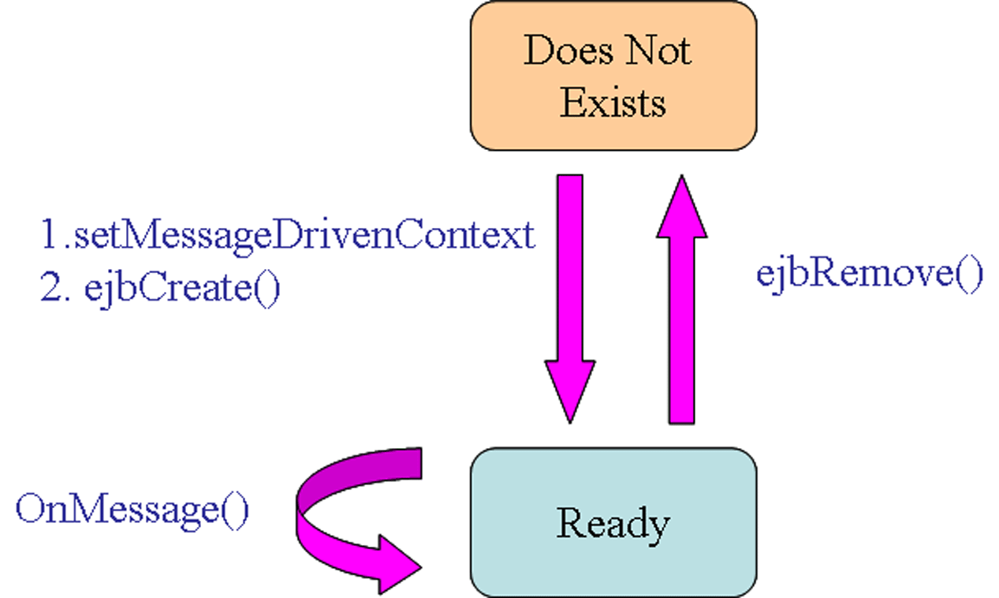

JMS en aplicaciones reales (1)
Message-Driven Beans
Un Message-Driven Bean o MDB (EJB dirigido por mensajes) es un oyente de mensajes que que puede consumir mensajes de una cola o de una durable subscription. Dichos mensajes pueden ser enviados por cualquier componente JEE (cliente, otro EJB o una componente Web. Incluso desde una aplicación o sistema que no use tecnología JEE.
Al igual que en el caso de los JMS clientes standalone (independientes) que se basan en el método onMessage(), un MDB también contiene este método que se invoca automáticamente a la llegada de un mensaje. Sin embargo difieren de estos clientes en los siguientes aspectos:
1. El contenedor EJB realiza automáticamente varias tareas de inicialización que deben implementarse por el cliente: crear un consumidor o (QueueReceiver, TopicSubscriber) para recibir el mensaje. El usuario asocia un MDB con una destination y usa una connection factory en en tiempo de despliegue. Si se quiere especificar una durable subscription o un selector de mensajes se puede hacer también en tiempo de despliegue. El MDB no tiene que registrar el message listener. No es necesario especificar el acknowledgment mode.
2. El MDB debe implementar las interfaces javax.ejb.MessageDrivenBean y javax.jms.MessageListener.
3. El MDB debe implementar el método ejbCreate(). Este método se utiliza si el MBD produce mensajes o bien los recibe de forma síncrona de otra destination. Se usa este método para buscar las factorías de conexión destinations y para crear una conexión.
4. El MDB debe implementar el método ejbCreate() para cerrar la conexión (si la abre).
5. El MDB debe implementar el método setMessageDrivenContext. Un contexto de este tipo es muy útil para la posterior gestión transaccional.
Con respecto a otros EJBs, la diferencia fundamental con cualquier otro EJB es que el MDB no tiene interface local o remota. Solo la clase bean. Es parecido a un stateless session bean (SSB) porque sus instancias son short-lived y no retienen estado para un cliente específico. Pero sus variables pueden contener info de estado mediante clientes JMS (una conexión, p.e.).
Como un SSB, un MDB puede tener varias instancias intercambiables ejecutándose al mismo tiempo. El contenedor puede hacer un pooling de instancias para permitir que los mensajes se procesen concurrentemente, lo cual puede afectar al orden en que se reciben los mensajes.
Para crear un MDB hay que:
1.Llamar al método setMessageDrivenContext para pasar el contexto del objeto a la instancia.
2.Llamar al método ejbCreate() de la instancia.
El ciclo de vida de un MDB puede verse en la figura adjunta:

Como ejemplo, supongamos que el cliente Client.java publica mensajes en un tópico en el que está escuchando el MDB TraderReceive.java. El código del primero no tiene mayor interés dado lo que sabemos de las sesiones anteriores. En cambio en el segundo hay algunos aspectos interesantes a resaltar. En primer lugar su anotación:
MessageDriven(maxBeansInFreePool = "200",
destinationType = "javax.jms.Topic",
initialBeansInFreePool = "20",
transTimeoutSeconds = "0",
defaultTransaction = MessageDriven.DefaultTransaction.REQUIRED,
durable = Constants.Bool.FALSE,
ejbName = "messageDriven",
destinationJndiName = "quotes")
En segundo lugar, su método de creación de contexto y su método OnMessage:
public void setMessageDrivenContext(MessageDrivenContext ctx) {
m_context = ctx;
}
public void onMessage(Message msg) {
TextMessage tm = (TextMessage) msg;
try {
String text = tm.getText();
log("Received new quote : "+text);
}
catch(JMSException ex) {
System.err.println("An exception occurred: "+ex.getMessage());
}
}
Finalmente los métodos de creación y destrucción quedan vacíos pero hay que implementarlos:
public void ejbCreate() { }
public void ejbRemove() { }
Este es un ejemplo básico de MDB.
Interacción con SSBs
Vamos a ver un ejemplo de un servlet que interacciona, a través de un mensaje MAP (pares de atributo valor) con un cliente que a su vez invoca a un EJB SSB para realizar una tarea concreta. El código del cliente se encuentra en el fichero TraderReceive.java. También en este ejemplo utilizamos transacciones, pero a través del package javax.transaction. Se usa un esquema Pub/sub
En el método init() se acaba creando un objeto Trader a partir de una sesión EJB, y una transacción:
public void init(Context ctx, String topicName)
throws NamingException, JMSException, RemoteException, CreateException
{
connectionFactory = (TopicConnectionFactory) ctx.lookup(JMS_FACTORY);
connection = connectionFactory.createTopicConnection();
connection.setClientID("traderReceive");
session = connection.createTopicSession(false, Session.AUTO_ACKNOWLEDGE);
topic = (Topic) ctx.lookup(topicName);
subscriber = session.createDurableSubscriber(topic, "traderReceive");
TraderHome brokerage = (TraderHome) ctx.lookup(EJB_HOME);
ejbTrader = brokerage.create();
tx = (javax.transaction.UserTransaction) ctx.lookup(TX);
connection.start();
}
La recepción y tratamiento de los mensajes se realiza en el método processMessages() en donde:
1. Nos quedamos en modo recepción:
Message msg = subscriber.receive();
2. Iniciamos la transacción:
tx.begin();
3. Leemos el contenido del objeto MapMessage:
MapMessage m = (MapMessage) msg;
String customerName = m.getString("CustomerName");
String tradeType = m.getString("TradeType");
String symbol = m.getString("Symbol");
int numberOfShares = m.getInt("Shares");
4. Detectamos el tipo de comando y lanzamos las órden correspondiente. Si ésta tiene éxito entonces se confirma la transacción y en caso contrario se deshace:
...
if ("sell".equalsIgnoreCase(tradeType)) {
tr = ejbTrader.sell(symbol, numberOfShares);
System.out.println("Sold " + tr.getNumberTraded());
tx.commit();
} else {
System.out.println("Rolling Back Transaction");
tx.rollback();
System.out.println("Unknown TradeType: "+tradeType);
}
...
NOTA: Algunos de los ejemplos presentados en esta sesión existen solo en la versión 7.0 del BEA WebLogic. Estos ejemplos se encuentran en ejemplosWL700.tar.gz